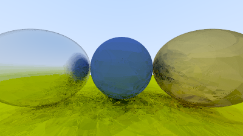
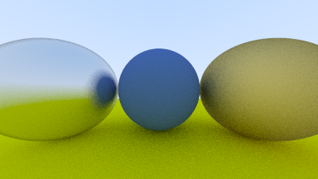

比图片更重的残余
Heavier Than the Picture It Makes

印度理工学院坎普尔分校统计系学生 Austin Shijo(GitHub 代号 mTvare6,推特 @epestr_0)在读一篇 CMake 教程时,看到一句几乎是随口一提的话——光线追踪理论上可以用任何语言实现。他决定去试试这句话的极限:用 Brainfuck 写一个光线追踪器。Brainfuck 只有八个符号——指针左右移动、单元格加减、输入输出、循环起止——外加一条无限长的内存磁带,没有变量名,没有函数,没有浮点数。他没有徒手敲那些符号,而是搭了一条编译管线:把 Peter Shirley 那本几乎每个图形学新人都写过一遍的入门教材《Ray Tracing in One Weekend》里"金属"那一章的 C 代码,先转成静态单赋值形式,再编译进一套他自制的中间表示语言(DSL),最后由 DSL 生成 Brainfuck。为了撑住地面那颗巨大球体的半径,他把常用的 8.8 定点数格式换成了 16.16;乘法靠重复加法,除法靠带余数追踪的长除法,平方根靠长除法版整数平方根,随机数靠一个模 256 的线性同余生成器——图形库里调一个函数就能拿到的东西,这里全部要用八个符号手工垒出来。
这件事从"内容"上看毫无新意:光线追踪算法已经被那本教材教到滚瓜烂熟,是图形学入门的标准已构;Brainfuck 作为玩笑式的极简语言也被 esolang 爱好者社区反复把玩、反复命名了三十年。SAE 判断余项从不看内容新不新,只看逻辑是不是还在长。这里真正没有被凿定的,不是算法,也不是语言,而是夹在两者之间的那件事本身——如何把任意数值计算正确地编译到一条八符号磁带上。Shijo 的管线(C→SSA→DSL→Brainfuck)是他现场搭出来的临时脚手架,没人证明过它是最优解,甚至没人证明过它是"对"的解法。整个场景编译出来后是 23MB 的 Brainfuck 源码,比它渲染出的 0.9MB 图片还重——这个体量倒挂本身就是残余的物证:凿构循环里真正活着的那部分(编译器怎么设计、抽象怎么搭)比它凿出来的成品更重、更粗糙、更没被消化。

博客九月二十四日发出,两天后被转到 Hacker News,拿到八十八分,评论区立刻出现两种不服。轻一点的质疑命名本身——"这根本不是用 Brainfuck 写光追,这是写了个 C-to-Brainfuck 编译器"——Shijo 当场承认,说真正有意思的从来不是手写那 23MB,而是编译器和抽象层。重一点的来自资深 Brainfuck 程序员 Daniel Cristofani:他指出 Shijo"位置无关"的编码策略,把磁带原本的图灵完备表达力,退化成了接近有限自动机水平;大量数值的复制和清零造成代码疯狂膨胀;磁带上到处留着没清理干净的垃圾数据——这是真正懂这门语言内部纹理的人给出的技术性差评。Shijo 的回应不是辩护,而是承认"这是探索性的,不是追求最优的",并表示会去学更规范的技巧。这场争执本身就是余项还没凝固成已构的证据:连"往 Brainfuck 磁带上编译数值程序的正确做法"这件事,行家之间都还没有共识可以直接抄。
正因为这场争论还悬而未决,现在看这个项目才有意义。等 Cristofani 式的批评被吸收、等某种"规范编译到磁带机"的技巧被写进教程或库,这条脚手架就会从余项变成已构——下一个人会直接调用现成的写法,不会再有人在评论区里当场教学。此刻它还是一个统计系学生一时兴起搭出来的、带着明显技术瑕疵、正在被行家现场纠正的活体标本,这正是余项之美要抓住的那个窗口。
github.com/mTvare6/rayfuck ↗Austin Shijo, a statistics student at IIT Kanpur (GitHub: mTvare6, X: @epestr_0), was reading a CMake tutorial when he ran into a line dropped almost in passing — that a ray tracer could theoretically be written in any language. He decided to test that claim against the simplest language he knew: Brainfuck, an esoteric language with exactly eight symbols — pointer movement, cell increment and decrement, input and output, loop brackets — plus a single, unbounded tape of memory cells. No variables, no functions, no floating point. Rather than hand-typing the thing, he built a compilation pipeline: the C code for the "Metal" chapter of Peter Shirley's Ray Tracing in One Weekend, a scene nearly every graphics beginner has rendered at some point, gets converted to static-single-assignment form, compiled into a custom intermediate DSL of his own design, and only then lowered into Brainfuck. To handle the oversized sphere standing in for the ground, he swapped the usual Q8.8 fixed-point format for Q16.16, and rebuilt from scratch everything a graphics library normally hands you for free: multiplication by repeated addition, division by long division with remainder tracking, square root via a long-division integer isqrt, a mod-256 linear congruential generator for randomness.
On content alone this is nothing new. Ray tracing has been taught to exhaustion by Shirley's book; Brainfuck has been an esolang-community plaything for three decades, named and re-named many times over. SAE's judgment of a remainder never rests on whether the content is novel — only on whether the logic is still growing. What hasn't been settled here isn't the algorithm or the language, but the thing sitting between them: how to correctly compile arbitrary numeric computation onto an eight-symbol tape. Shijo's pipeline — C to SSA to DSL to Brainfuck — is scaffolding he built on the spot, and nothing about it has been shown to be optimal, or even correct in any generally agreed sense. The compiled scene came out to 23 megabytes of Brainfuck, heavier than the 0.9-megabyte image it renders. That inversion is itself physical evidence of the remainder: the part of the chisel-construct cycle still alive — the design of the compiler, the shape of the abstractions — outweighs, in literal bytes, the finished thing it produced.
The post went up on September 24; two days later it reached Hacker News and picked up eighty-eight points, and pushback arrived fast, in two registers. The milder objection questioned the framing itself — this isn't writing a ray tracer in Brainfuck, it's writing a C-to-Brainfuck compiler — which Shijo conceded outright, saying the interesting part was never the 23 megabytes of raw output but the compiler and the abstractions that generated it. The sharper objection came from Daniel Cristofani, a Brainfuck programmer whose name carries real authority in that small community: he pointed out that Shijo's position-agnostic encoding collapses the tape's Turing-complete expressiveness down to something closer to a finite automaton, that excessive copying and zeroing bloats the generated code, and that the tape is left littered with uncleared garbage — a technically informed bad review from someone who actually knows this language's inner texture. Shijo's reply wasn't defensive; he called the project exploratory rather than optimal, and said he'd go study the proper technique. That exchange is itself proof that nothing here has hardened into construct yet: there isn't even a settled answer, among the people who actually know this language, for what correctly compiling numeric code to a Brainfuck tape should look like.
That's exactly why the moment matters. Once critiques like Cristofani's get absorbed and some canonical way of compiling to a tape machine gets written into a tutorial or a library, this scaffolding stops being remainder and becomes construct — the next person will just reach for the known technique, and no one will be teaching it live in a comment thread. Right now it's still a half-flawed specimen a statistics student built on a whim, getting corrected in real time by someone who actually knows the terrain — which is precisely the window the beauty of the remainder exists to catch.
github.com/mTvare6/rayfuck ↗